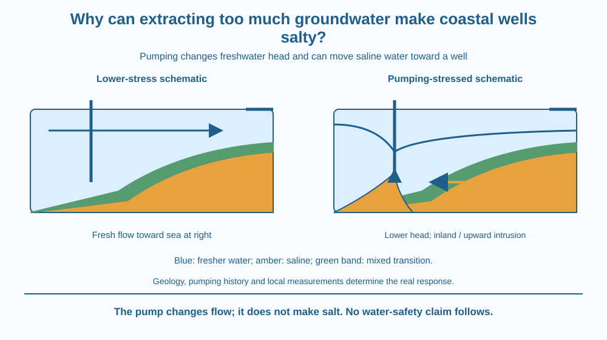

Explain why excessive freshwater pumping can make a coastal well more saline. Follow changing hydraulic head and a moving freshwater–saltwater transition. Distinguish this problem from creating salt by a reaction, filtering seawater after collection or explaining the original groundwater-recharge process.
A coastal well may draw relatively fresh groundwater even though seawater is nearby. A nearby salty source does not automatically mix uniformly with every underground water store at once.
However, changing the groundwater flow conditions can shift where the saline water moves. A well that once lay safely within the fresher part of the system may begin drawing a different mixture after sustained extraction.
The question is what held the earlier pattern in place and how pumping disturbs it. The pump does not manufacture salt; it changes the water and dissolved material reaching the well.
An aquifer is a body of sufficiently permeable rock or sediment that can store and transmit groundwater. Near a coast, fresher groundwater and saline water can occupy connected parts of a subsurface system.
Hydraulic head describes groundwater's potential to move, related to elevation and pressure. Under suitable natural conditions, freshwater flow toward the coast helps maintain a pattern in which fresher water discharges seaward and saltwater remains farther seaward or deeper.
Saltwater is denser than freshwater, which contributes to their arrangement. The contact is commonly a transition zone where mixing occurs, not an infinitely thin waterproof wall. A coloured boundary in a diagram is a convenient summary of a more gradual real distribution.
Pumping removes freshwater and can lower local groundwater head. If extraction sufficiently changes the balance, saltwater can move toward fresher parts of the aquifer. This is saltwater intrusion, a shift in water distribution and quality rather than the creation of a new salt source.
Intrusion can occur laterally, with more saline water advancing inland from the coastal side. It can also occur vertically, with deeper saline water moving upward toward a pumping well. This upward distortion is often called upconing.
The response depends on geology, well position, pumping history, recharge and other boundary conditions. Two nearby wells need not change at exactly the same rate. We should not invent a universal pumping limit or assume every coastal aquifer has one identical shape.
Changes in recharge or sea conditions can also affect the system. The mechanism here remains the pumping-induced change in head and flow. Mentioning recharge as one influence does not replace the explanation with the earlier lesson on how rain enters the ground.
Monitoring can include groundwater levels and suitable measures of salinity at selected locations over time. A single drawing or isolated taste is not an adequate assessment. Students should never taste unknown well water or infer drinking suitability from clarity alone.
Managing an affected aquifer requires local evidence and appropriate professional decisions. Reducing stress, altering extraction patterns or considering other supply arrangements may be assessed, but there is no one-step classroom fix. Restoring a freshwater pattern can be complicated once saline water has moved into an aquifer.
Draw a coastal cross-section with land on the left and sea on the right. Place fresher groundwater above and inland of a deeper saline region, with a shaded transition between them.
In the first panel, show a seaward freshwater-flow arrow and an inland well drawing from the fresher region. In the second, lower the local head near the well and extend the transition landward or upward.
Keep the rock framework unchanged so the comparison isolates the flow change. Label the altered water reaching the well rather than drawing a salt factory inside the pump. The model is qualitative and does not prescribe a well depth or extraction rate.
The SVG compares a lower-stress coastal pattern with a pumping-stressed one. The sea remains at the right of each panel. Fresh, saline and mixed-transition regions use distinct flat colours.
Arrows indicate inland or upward saline movement in the stressed case. A well symbol and a lowered head marker show where extraction changes the local conditions. The transition is drawn as a band rather than a perfect barrier.
All dimensions are schematic. No coastline is identified, no local water-quality measurement is invented and no pumping recommendation appears. The labels connect changing head to changing source water.

Coastal communities in India depend on varied groundwater systems. A village well, an urban supply well and a deep industrial borehole may interact with different formations and extraction patterns. A general mechanism cannot substitute for a local survey.
A school can discuss supplied cross-sections or anonymised monitoring examples without visiting a borehole site. Wells, pump equipment and coastal edges are not suitable locations for an unsupervised student activity.
The lesson also separates availability from quality. A pump may still deliver a volume of water while its salinity changes. Counting litres alone would miss the fact that the water's suitability for an intended use may have altered.
Use paper and three colours. No real water sample is needed.
Label the comparison schematic and keep the sea position consistent. Ask a partner whether the pump creates salt or changes which water arrives. Add a note that actual timing and safe extraction require local evidence, not the distances in your sketch.
Why can pumping affect a quality boundary outside the immediate well casing? Explain how groundwater flow connects different regions of the aquifer.
Now consider a well above deeper saline water rather than beside a simple coastal wedge. What direction of saline movement could threaten it? This question tests the difference between lateral intrusion and upconing, without assuming that every real site follows only one pattern.
What is saltwater intrusion in this lesson?
Answer: C — Changing flow conditions can move saline water into regions previously containing fresher groundwater.
Why can strong pumping encourage intrusion?
Answer: B — Reduced freshwater head can allow saline water to move toward the well or fresher zone.
A well overlies deeper saline water. What pumping-related movement could threaten it?
Answer: A — Upconing is upward saline movement toward a pumping well under suitable conditions.
Prepare a two-panel explanation for a fictional coastal school. Include the original freshwater flow, the pumping-induced head change, a shifting transition and a possible route of saline entry to a well.
List the evidence a professional assessment would need: groundwater levels, salinity measurements, geology and extraction history. Do not recommend a pumping rate or decide whether a real supply is drinkable. Your task is to explain the mechanism and the information needed to evaluate it.
A well can remain physically intact while the water reaching it changes. The problem may lie in the surrounding flow field and a moving transition, rather than a hole in the pump or salt suddenly appearing from nowhere. Resource quality is therefore part of groundwater management as well as resource volume.
Excessive pumping can lower coastal freshwater head and draw saline water inland or upward; the resulting intrusion changes the mixture reaching wells without creating new salt.